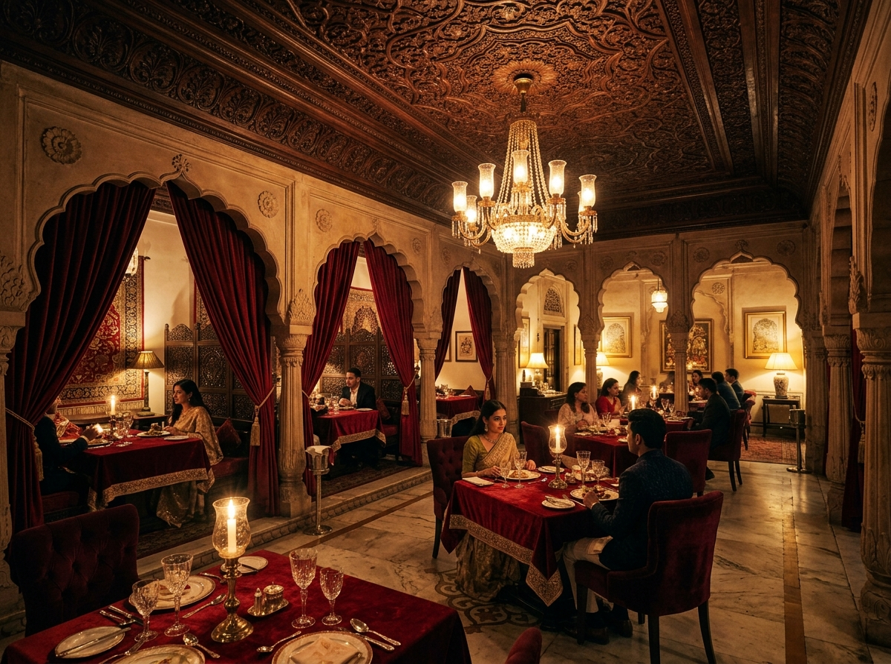
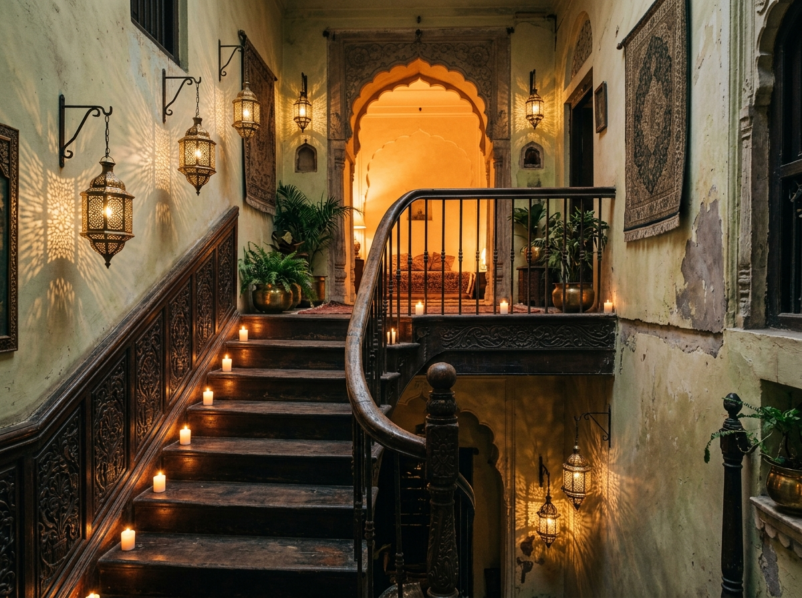
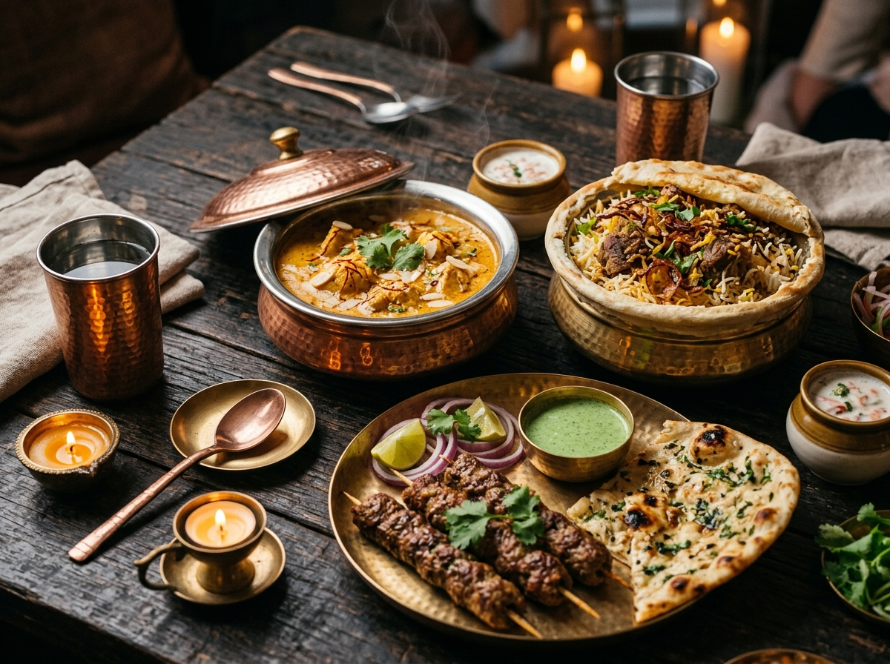
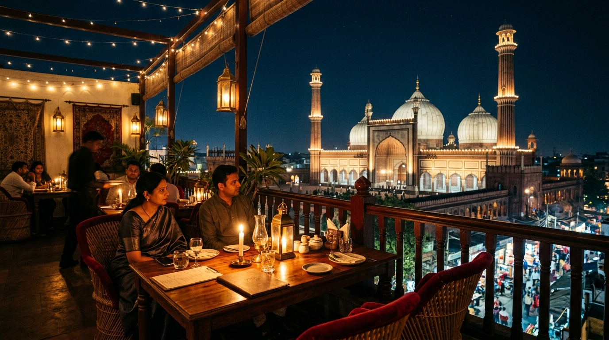
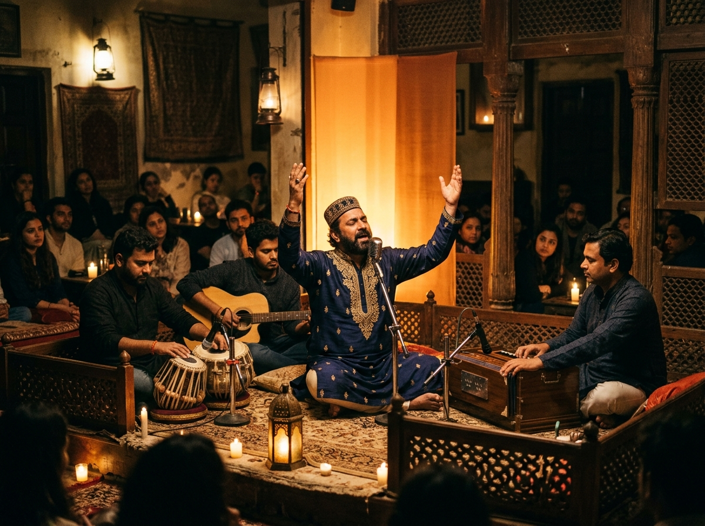
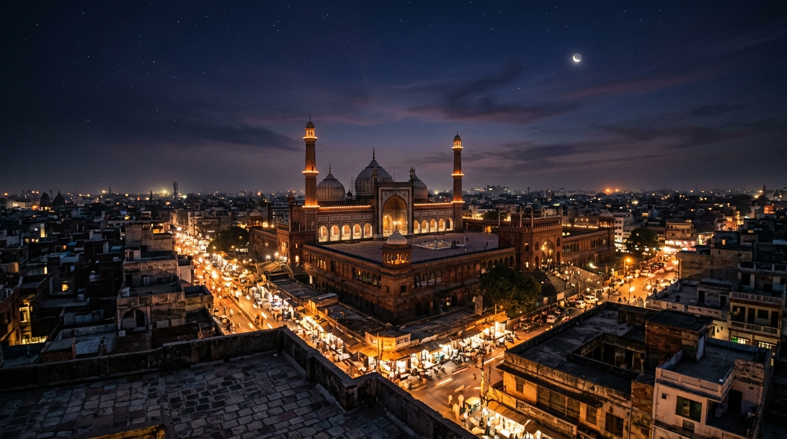

Signature Shahi Handi
Signature DishSlow-simmered rich gravy infused with hand-crushed saffron, golden fried onions, mace, and velvety cream. Presented in an authentic lidded copper cauldron.
A Rooftop Evening in the Heart of Purani Dilli
Old Delhi cuisine. Mughlai flavours.
A view worth staying for.
An unhurried sanctuary above the historic alleys of Shahjahanabad.
Mushk brings together the flavours, architecture and atmosphere of Old Delhi in one rooftop experience. From the first step inside to the view of Jama Masjid above the rooftops, every detail should feel connected to the character of Purani Dilli.
Here, the aromas of hand-crushed saffron and slow-braised spices mingle with the evening breeze. Flickering brass candlelight illuminates carved wooden ceilings, while the call to prayer and the hum of Urdu Bazar gently drift beneath your feet.
Direct line-of-sight to the monumental domes and 130-foot minarets of Jama Masjid, bathed in amber floodlights.
Carved teakwood jharokhas, cusped Mughal arches, and intimate crimson velvet dining alcoves.
Soulful Sufi acoustic music under the stars, accompanied by heirloom Mughlai hospitality.


An evening with the old city beneath you.
Rooted in royal Mughal kitchens and refined through generations in Old Delhi’s galis. Each recipe honors slow-cooked tradition, fragrant whole spices, and ceremonial craftsmanship.

In Purani Dilli, cooking is an act of patience. Sealed under dough and braised on gentle charcoal embers, our dishes capture the essence of saffron, green cardamom, and caramelized shallots. Served piping hot in hammered copper ware that keeps flavors intact to the last bite.
Slow-simmered rich gravy infused with hand-crushed saffron, golden fried onions, mace, and velvety cream. Presented in an authentic lidded copper cauldron.
Aged basmati rice layered with aromatic marinades, sealed under a delicate flour crust and cooked in its own steam over low flame.
Finely minced medallions seasoned with potli masala and cold-smoked with clove and ghee, served atop wafer-thin saffron ulta tawa paratha.
Charcoal-seared cuts basted with mustard oil, hung curd, and kashmiri deggi mirch, paired with freshly ground mint-coriander chutney.
Hand-shaken beverage with crushed garden mint, kiwi infusion, lime, and subtle floral essence served over mountain ice in a chilled copper tumbler.
Crispy ghee-toasted bread steeped in thickened cardamom milk, topped with rich malai rabri, roasted pistachios, and pure silver vark.
Lantern-lit terraces, candlelit arches, and the gentle resonance of Sufi verse under the open Delhi sky.


In the heart of Shahjahanabad, where centuries of poets, artisans, and khansamas have lived and created, Mushk was envisioned as a living tribute to the historic spirit of Old Delhi.
Named after Mushk (مشک) — the rare, timeless fragrance that lingers long after a moment has passed — our rooftop is designed as a peaceful pause above the bustle of Urdu Bazar Road.
"Not just somewhere you eat. Somewhere you experience the living pulse and poetry of Old Delhi."
Every arch was carved with respect for traditional Indo-Islamic craftsmanship; every copper vessel honors the slow culinary heritage of the Mughal court. When you ascend our stairs, you step into a night made for lingering conversations.
A visual anthology of candlelit terraces, culinary crafts, and midnight skylines.

Located on historic Urdu Bazar Road, right opposite Gate No. 1 of Jama Masjid. An easy walk from Jama Masjid and Chawri Bazar Metro Stations.
4179, Urdu Bazar Road, Old Delhi, Jama Masjid
Daryaganj, Delhi 110006 · Opposite Gate No. 1Open until 12:00 AM Midnight
Daily: 5:00 PM to 12:00 AM · Dinner & Late NightOld Delhi · India | Mushk Café Concept & Redesign | All Rights Reserved.